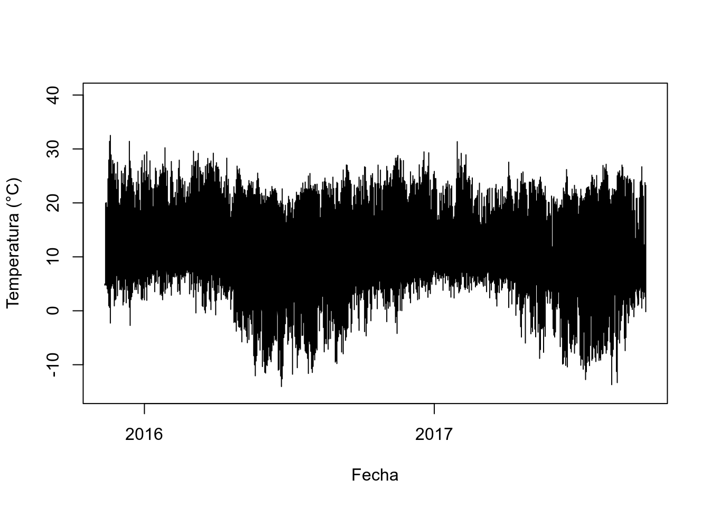
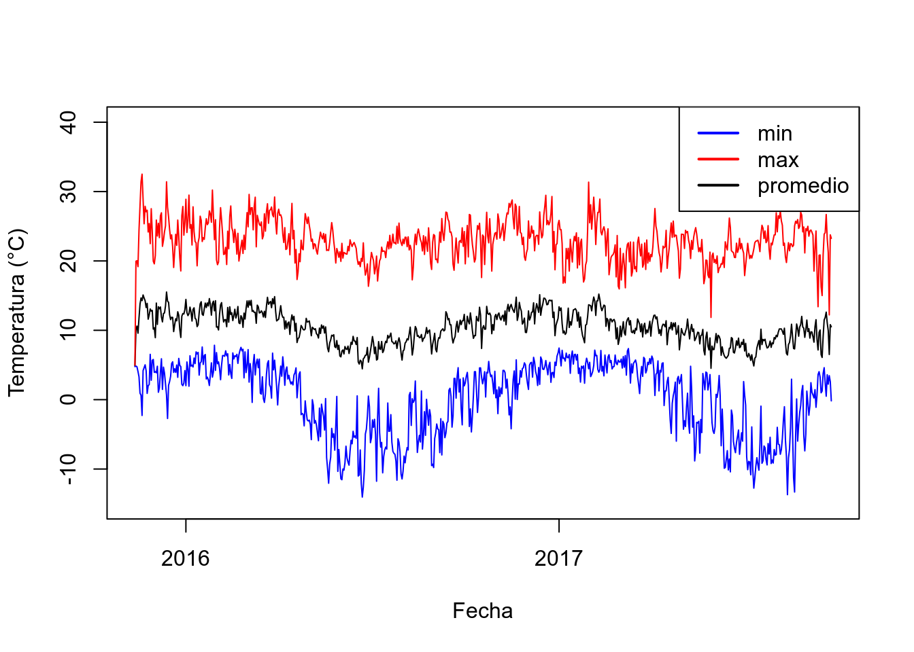
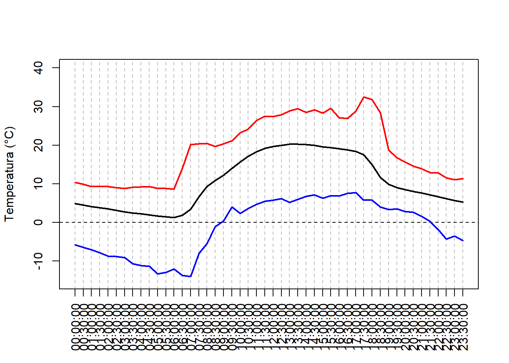
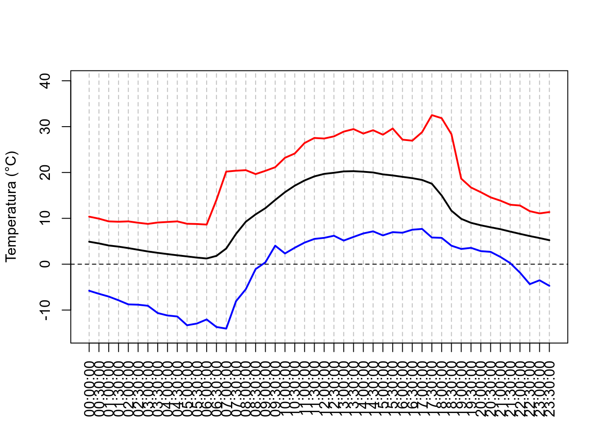
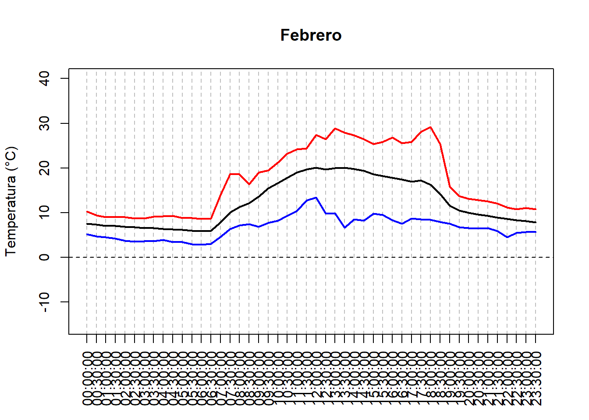
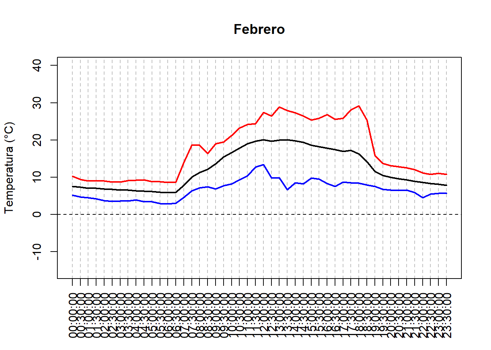
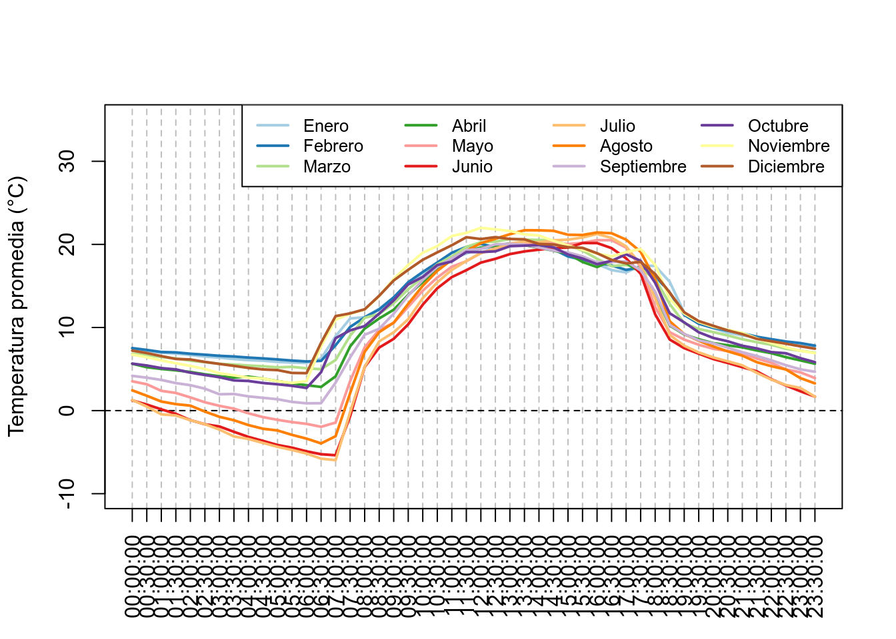
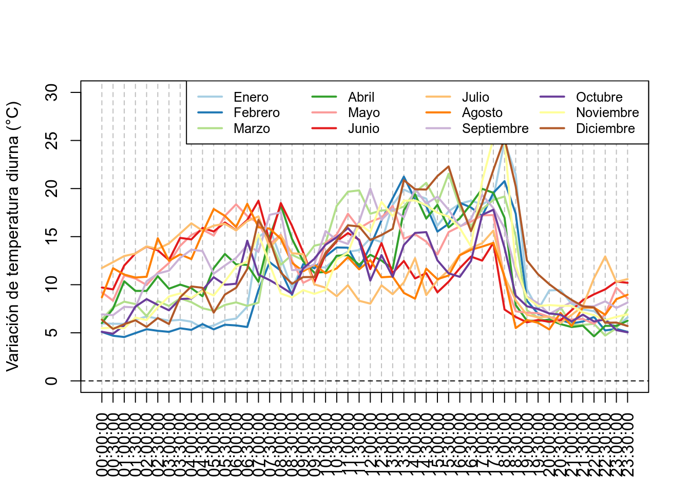

14 Analizar datos de loggers de temperatura
En estudios de biología, ecología, o agronomía, frecuentemente usamos datos de temperatura de dataloggers. En este estudio vamos a ver como analizar esos datos usando datos de temperatura del altiplano Boliviano cerca de la ciudad de El Alto. El primer paso es transformar los datos del datalogger en un formato que sea fácil de leer para R. Usaremos un archivo CSV y la función read.table(). El archivo se puede descargar desde el sitio web del libro en GitHub (https://github.com/frareb/myRBook_SP/blob/master/myFiles/E05C13.csv ; clic derecho sobre el enlace y seleccionar “Guardar destino como”).
bdd <- read.table("myFiles/E05C13.csv", skip = 1, header = TRUE,
sep = ",", dec = ".", stringsAsFactors = FALSE)
colnames(bdd) <- c("id", "date", "temp")
head(bdd)## id date temp
## 1 1 11/12/15 23:00:00 4.973
## 2 2 11/12/15 23:30:00 4.766
## 3 3 11/13/15 00:00:00 4.844
## 4 4 11/13/15 00:30:00 4.844
## 5 5 11/13/15 01:00:00 5.076
## 6 6 11/13/15 01:30:00 5.282tail(bdd)## id date temp
## 32781 32781 09/25/17 21:00:00 7.091
## 32782 32782 09/25/17 21:30:00 6.914
## 32783 32783 09/25/17 22:00:00 6.813
## 32784 32784 09/25/17 22:30:00 6.611
## 32785 32785 09/25/17 23:00:00 6.331
## 32786 32786 09/25/17 23:30:00 5.385str(bdd)## 'data.frame': 32786 obs. of 3 variables:
## $ id : int 1 2 3 4 5 6 7 8 9 10 ...
## $ date: chr "11/12/15 23:00:00" "11/12/15 23:30:00" "11/13/15 00:00:00" "11/13/15 00:30:00" ...
## $ temp: num 4.97 4.77 4.84 4.84 5.08 ...Podemos observar que la fecha esta al formato character, y que contiene la fecha con el mes, el día, y el año separados con /, un espacio, y la hora con horas de 0 a 24, minutos, y segundos, separados con : (ejemplo: 11/12/15 23:00:00 para el 12 de Noviembre de 2015 a las 11 de la noche). Vamos a separar la información en varios objetos. Primero vamos a separar la fecha de la hora. Para esto vamos a usar la función strsplit() usando como separador el espacio entre la fecha y la hora.
strsplit("11/12/15 23:00:00", split = " ")## [[1]]
## [1] "11/12/15" "23:00:00"Como indican los corchetes dobles, la función devuelve un objeto en el formato list. Nosotros queremos el vector que corresponde al primer elemento de la list entonces vamos a añadir [[1]].
strsplit("11/12/15 23:00:00", split = " ")[[1]]## [1] "11/12/15" "23:00:00"El primer elemento del vector es la fecha. Para tener todas las fechas vamos a hacer un bucle con la función sapply().
bddDay <- sapply(strsplit(bdd[, 2], split = " "), "[[", 1)
head(bddDay)## [1] "11/12/15" "11/12/15" "11/13/15" "11/13/15" "11/13/15" "11/13/15"A continuación vamos a necesitar las fechas en el formato factor (función aggregate() para sacar la información por día). Entonces necesitamos transformar el objeto en el formato factor con la función as.factor().
bddDay <- as.factor(sapply(strsplit(bdd[, 2], split = " "), "[[", 1))
head(bddDay)## [1] 11/12/15 11/12/15 11/13/15 11/13/15 11/13/15 11/13/15
## 684 Levels: 01/01/16 01/01/17 01/02/16 01/02/17 01/03/16 ... 12/31/16Haciendo la transformación hacia el formato factor, los niveles de nuestro objeto están en orden alfabético como si las fechas estuvieran texto. Nosotros querremos ordenar las fechas usando las fechas. Para esto vamos a hacer un vector con todas las fechas únicas con la función unique(), y después ordenar las fechas con la función sort.list() usando las fechas con la función as.POSIXct(). Vamos a usar el vector llamado lev para especificar como deben estar los niveles de factor de nuestras fechas.
bddDay <- as.factor(sapply(strsplit(bdd[, 2], split = " "), "[[", 1))
udate <- unique(bddDay)
lev <- udate[sort.list(as.POSIXct(strptime(udate, "%m/%d/%y")))]
bddDay <- factor(bddDay, levels = lev)
head(bddDay)## [1] 11/12/15 11/12/15 11/13/15 11/13/15 11/13/15 11/13/15
## 684 Levels: 11/12/15 11/13/15 11/14/15 11/15/15 11/16/15 ... 09/25/17Ahora podemos añadir las fechas como nueva columna del objeto bdd y hacer lo mismo para las horas (no hay que reordenar los niveles de hora ya que el orden por defecto corresponde a lo que queremos).
bdd$bddDay <- bddDay
bdd$bddHour <- as.factor(sapply(strsplit(bdd[, 2], split = " "), "[[", 2))
head(bdd)## id date temp bddDay bddHour
## 1 1 11/12/15 23:00:00 4.973 11/12/15 23:00:00
## 2 2 11/12/15 23:30:00 4.766 11/12/15 23:30:00
## 3 3 11/13/15 00:00:00 4.844 11/13/15 00:00:00
## 4 4 11/13/15 00:30:00 4.844 11/13/15 00:30:00
## 5 5 11/13/15 01:00:00 5.076 11/13/15 01:00:00
## 6 6 11/13/15 01:30:00 5.282 11/13/15 01:30:00Podemos visualizar los datos con la función plot(), especificando el formato de las fechas con la función as.Date()
plot(x = as.Date(bdd$bddDay, format = "%m/%d/%y"), y = bdd$temp,
type = 'l', ylim = c(-15, 40),
xlab = "Fecha", ylab = "Temperatura (°C)")
Podemos simplificar la información calculando únicamente las temperaturas mínimas, promedias, y máximas con la función aggregate().
tempDayMean <- aggregate(x = bdd[, 3], by = list(bdd[, 4]), FUN = mean)
tempDayMin <- aggregate(x = bdd[, 3], by = list(bdd[, 4]), FUN = min)
tempDayMax <- aggregate(x = bdd[, 3], by = list(bdd[, 4]), FUN = max)
plot(x = as.Date(tempDayMean[, 1], format = "%m/%d/%y"),
y = tempDayMean[, 2], type = 'l', ylim = c(-15, 40),
xlab = "Fecha", ylab = "Temperatura (°C)")
points(x = as.Date(tempDayMin[, 1], format = "%m/%d/%y"),
y = tempDayMin[, 2], type = 'l', col = 4)
points(x = as.Date(tempDayMax[, 1], format = "%m/%d/%y"),
y = tempDayMax[, 2], type = 'l', col = 2)
legend("topright", legend = c("min", "max", "promedio"),
lty = 1, lwd = 2, col = c(4, 2, 1))
También podemos calcular la diferencia entre la temperatura máxima y la temperatura mínima (variación de temperatura diurna).
tempDayTR <- tempDayMax[, 2] - tempDayMin[, 2]
plot(x = as.Date(tempDayMean[, 1], format = "%m/%d/%y"),
y = tempDayTR, type = 'l', ylim = c(5, 45),
xlab = "Fecha", ylab = "Variación de temperatura diurna (°C)")
Otra posibilidad es de agrupar los datos para tener la temperatura promedia de un día con la función aggregate().
tempHourMean <- aggregate(x = bdd[, 3], by = list(bdd[, 5]), FUN = mean)
tempHourMin <- aggregate(x = bdd[, 3], by = list(bdd[, 5]), FUN = min)
tempHourMax <- aggregate(x = bdd[, 3], by = list(bdd[, 5]), FUN = max)
hours <- seq(from = 0, to = 23.5, by = 0.5)
plot(x = hours,
y = tempHourMean[, 2], type = 'l', ylim = c(-15, 40),
xlab = "", ylab = "Temperatura (°C)", lwd = 2,
xaxt = "n", panel.first = {
abline(v = hours, col = "gray", lty = 2)
abline(h = 0, lty = 2)
})
axis(side = 1, at = hours, labels = tempHourMean[, 1], las = 2)
points(x = hours, y = tempHourMin[, 2], type = 'l', col = 4, lwd = 2)
points(x = hours, y = tempHourMax[, 2], type = 'l', col = 2, lwd = 2)
Tambien podemos calcular las temperaturas de los dias para cada mes.
meses <- c("Enero", "Febrero", "Marzo", "Abril", "Mayo", "Junio",
"Julio", "Agosto", "Septiembre", "Octubre", "Noviembre", "Diciembre")
hours <- seq(from = 0, to = 23.5, by = 0.5)
bddMonth <- sapply(strsplit(as.character(bdd$bddDay), split = "/"), "[[", 1)
tempDayEachMonth <- lapply(sort(unique(bddMonth)), function(myMonth){
bddX <- bdd[bddMonth == myMonth, ]
tempHourMean <- aggregate(x = bddX[, 3], by = list(bddX[, 5]), FUN = mean)
tempHourMin <- aggregate(x = bddX[, 3], by = list(bddX[, 5]), FUN = min)
tempHourMax <- aggregate(x = bddX[, 3], by = list(bddX[, 5]), FUN = max)
return(data.frame(tempHourMean, tempHourMin, tempHourMax))
})
# for (i in seq_along(tempDayEachMonth)){ # para todos los meses
for (i in 1:2){ # solo para Enero y Febrero
plot(x = hours, y = tempDayEachMonth[[i]][, 2],
type = 'l', ylim = c(-15, 40),
xlab = "", ylab = "Temperatura (°C)", lwd = 2,
main = meses[i],
xaxt = "n", panel.first = {
abline(v = hours, col = "gray", lty = 2)
abline(h = 0, lty = 2)
})
axis(side = 1, at = hours, labels = tempHourMean[, 1], las = 2)
points(x = hours, y = tempDayEachMonth[[i]][, 4],
type = 'l', col = 4, lwd = 2)
points(x = hours, y = tempDayEachMonth[[i]][, 6],
type = 'l', col = 2, lwd = 2)
} 

O todo en un mismo grafico, y la variación de temperatura diurna para cada mes.
plot(x = hours, y = tempDayEachMonth[[1]][, 2], type = 'n', ylim = c(-10, 35),
xlab = "", ylab = "Temperatura promedia (°C)",
xaxt = "n",
panel.first = {
abline(v = hours, col = "gray", lty = 2)
abline(h = 0, lty = 2)
})
axis(side = 1, at = hours, labels = tempHourMean[, 1], las = 2)
myColors <- c("#A6CEE3", "#1F78B4", "#B2DF8A", "#33A02C", "#FB9A99",
"#E31A1C", "#FDBF6F", "#FF7F00", "#CAB2D6", "#6A3D9A", "#FFFF99",
"#B15928")
for (i in seq_along(tempDayEachMonth)){
points(x = hours,
y = tempDayEachMonth[[i]][, 2],
type = 'l', col = myColors[i], lwd = 2)
}
legend("topright", ncol = 4, legend = meses, col = myColors,
lty = 1, lwd = 2, cex = 0.8)
plot(x = hours, y = tempDayEachMonth[[1]][, 2], type = 'n', ylim = c(0, 30),
xlab = "", ylab = "Variación de temperatura diurna (°C)",
xaxt = "n",
panel.first = {
abline(v = hours, col = "gray", lty = 2)
abline(h = 0, lty = 2)
})
axis(side = 1, at = hours, labels = tempHourMean[, 1], las = 2)
myColors <- c("#A6CEE3", "#1F78B4", "#B2DF8A", "#33A02C", "#FB9A99",
"#E31A1C", "#FDBF6F", "#FF7F00", "#CAB2D6", "#6A3D9A", "#FFFF99",
"#B15928")
for (i in seq_along(tempDayEachMonth)){
points(x = hours,
y = tempDayEachMonth[[i]][, 6] - tempDayEachMonth[[i]][, 4],
type = 'l', col = myColors[i], lwd = 2)
}
legend("topright", ncol = 4, legend = meses, col = myColors,
lty = 1, lwd = 2, cex = 0.8)
También podemos representar las temperaturas diarias con gráficos “ridgeline” y el package ggplot2 (https://www.data-to-viz.com/graph/ridgeline.html).
pkgCheck <- function(x){
if (!require(x, character.only = TRUE)){
install.packages(x, dependencies = TRUE)
if(!require(x, character.only = TRUE)) {
stop()
}
}
}
pkgCheck("ggplot2")
pkgCheck("ggridges")## Loading required package: ggridges##
## Attaching package: 'ggridges'## The following object is masked from 'package:ggplot2':
##
## scale_discrete_manualpkgCheck("viridis")## Loading required package: viridis## Loading required package: viridisLitemeanTemps <- unlist(lapply(tempDayEachMonth, "[[", 2))
labelMonth <- rep(meses, each = 48)
dfTemps <- data.frame(month = labelMonth, value = meanTemps,
stringsAsFactors = FALSE)
dfTemps$month <- factor(dfTemps$month, levels = rev(meses))
p <- ggplot(data = dfTemps, aes(y = month, x = value, fill = ..x..))
p <- p + geom_density_ridges_gradient(stat="binline")
p <- p + scale_fill_viridis(name = "Temp. [°C]", option = "C")
p <- p + xlab("Temperature") + ylab("") +
theme(
legend.position="none",
panel.spacing = unit(0.1, "lines"),
strip.text.x = element_text(size = 8)
)
p## `stat_binline()` using `bins = 30`. Pick better value with `binwidth`.